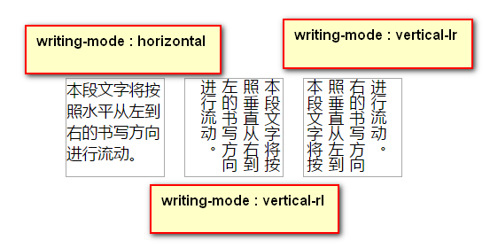

前端入门到出家
html/html5
h5--语义标签
- header / nav / footer / section /
语义标签的好处
有利于文档裸奔，有利于seo（搜索引擎优化）
合理的title、description、keywords：搜索对着三项的权重逐个减小，title值强调重点即可，重要关键词出现不要超过2次，而且要靠前，不同页面title要有所不同；description把页面内容高度概括，长度合适，不可过分堆砌关键词，不同页面description有所不同；keywords列举出重要关键词即可
语义化的HTML代码，符合W3C规范：语义化代码让搜索引擎容易理解网页
重要内容HTML代码放在最前：搜索引擎抓取HTMl顺序是从上到下，有的搜索引擎对抓取长度有限制，保证重要内容一定会被抓取
重要内容不要用js输出：爬虫不会执行js获取内容
少用iframe：搜索引擎不会抓取iframe中的内容
非装饰性图片必须加alt
提高网站速度：网站速度是搜索引擎排序的一个重要指标
h5--表单
- 新增的type
<input type="number" />
<input type="date" />
<input type="color" />
- 新增的标签
//老版本的下拉菜单
<select>
<option>选项</option>
<option>选项</option>
<option>选项</option>
<option>选项</option>
<option>选项</option>
</select>
//新增的自定义下拉菜单
<input type="text" list="city" />
<!-- 数据列表的标签-->
<datalist id="city">
<option value="上海市"></option>
<option value="北京市"></option>
<option value="广州市"></option>
<option value="西红柿"></option>
<option value="西安市"></option>
<option value="什么都不是"></option>
</datalist>
//新增的自定义下拉菜单要配合文本输入框一起使用
- 表单事件
h5--音频标签
- video/audio
h5--dom拓展
选择器 querySelector/queryselectorAll
根据css选择器来选择元素 直接通过id class 标签等
类名的操作 classList
var odemo = document.querySelector('.demo')
odemo.classList.add('icur'); //添加
odemo.classList.remove('icur') //移除
odemo.classList.toggle('icur') //切换
odemo.classList.contains('icur') //检测是否包含
自定义属性 data-开头
<div class="demo" data-my-name="hezhi"></div>
<script type="text/javascript">
var odemo = document.querySelector('.demo')
console.log(odemo.dataset['myName']); //获取自定义属性 //注意html/js写法的区别
odemo.dataset['myAge']="18"; //设置自定义属性 dataset是一个属性
</script>
本地信息存储
//以下两个属性都代表同一个Storage对象---一个持久化关联数组
//数组使用字符串来索引，存储的值也都是字符床形式的
1> sessionStorage
存储的有效期：当前标签关闭之前都是有效的。当前标签页关闭之后，所有通过sessionStorage 存储的数据都将被删除
作用域： 限定在同源文档，而且还被限定在窗口中
//一个标签里面包含iframe元素，那么他们所包含的文档时同源的
2> localStorage
存储的有效期： 永久的
作用域： 限定在文档源级别的。
//同源文档之间共享数据，需要注意的是locaStorage的作用域也受浏览器供应商的限制
语法：
localStorage.setItem(key,value); //存储信息
localStorage.getItem(key); //获取信息
localStorage.removeItem(key) //删除某项
localStorage.clear() //全部删除
css/css3.0
c3--新增文本特性
text-shadow （水平偏移量，垂直偏移量，高斯模糊，阴影颜色） / HSLA（色调，饱和度，亮度，透明度） // writing-mode 书写模式
writing-mode 文字书写方向 lr-tb 从左向右，

c3--新增选择器
伪类选择器 ============特殊标记 ： 单冒号
- nth-child()
//当参数是一个正数的时候，
li:nth-child(3)========表示选中第三个li
//参数是表达式n===2n====2n-1
li:nth-child(2n)=======表示选中所有偶数li
//当参数是 -n+5
li:nth-child(-n+5)=====表示选中前5个li
- E:checked =====匹配所有被选中的文本框
伪对象选择器
//选中首字母
E::first-letter===========此伪对象仅作用于块对象。内联对象要使用该伪对象，必须先将其设置为块级对象。
//选中第一行
E::first-line=============此伪对象仅作用于块对象。内联对象要使用该伪对象，必须先将其设置为块级对象。
//E::before 设置目标元素结构前面的内容，一般配合content;
//E::after 设置目标元素结构后面的内容，一般配合content;
--------------------------------------------------
此方法生成的元素是行类元素
--------------------------------------------------
//content的语法规则
.string p:after{content:"是";}
.attr p:after{content:attr(title);}
.url p:before{content:url(../../skin/ico.png);}
c3--新增盒模型
- 盒模型的宽度计算规则
- 新增盒模型=====box-sizing=====也叫做怪异盒模型
当box-sizing取值为border-box：此时盒模型为内减模式，盒子的绝对宽度 = width
=============================================================
当box-sizing取值为content-box: 此时盒模型为外增模式，盒子的绝对宽度= width+padding+border
c3--过渡/动画
c3--变换
c3--布局-------------------c3最重要的改变
新增特性一般都需要添加浏览器的私有前缀
-webkit- ====== chrome // 以及当前手机浏览器 // sofori // 国内的双核浏览器
-moz-
-ms-
-0-
js
基础语法省略
数据类型的隐式转换
js中所有的数据类型都可以当成对象来使用，除了两个空值
//数字
2.toString() //这里会报错，以为js解析器，会试图将点 转化为浮点数
//以下有几种修正的方式
2 .toString();
(2).toString();
2..toString();
数组的方法
- 1 slice 方法 返回指定的数组的一个片段，或者子数组 ===该数组参数支持负数
//实用案例
Array.prototype.slice.call(arguments,0) //将伪数组数组话
- 2 splice 方法 在数组中插入或者删除元素的通用的方法，
//前两个参数指定了需要删除的数组的元素，后面任意个数的参数指的是需要插入的元素
数组的排序sort方法与参数
//sort排序默认使用字典排序 10 < 2 ,123 > 12
js内置的一些对象
Object ==Array===Function
Date===RegExp======Math
Number === String == Boolean ==== 包装对象
typeof 操作符
值类型 ----返回基本数据类型
复杂类型 ----返回object
函数例外 ---- 返回 function
==隐式转换的规则
//====以上比较规则，适用所有===//
console.log({}==!{}); // false
=> {}.valueOf().toString() == "[object Object]"
=> consloe.log("[object Object]" == false)
//数组有点区别
console.log([]==![]) //true
=> [].valueOf().toString() == ''
=> console.log( '' == false)
=> console.log( 0 == 0) //true
关系运算符===逻辑运算符==delete关键字===忽略（不懂自己查文档）
- delete可以删除对象的属性，和没有用var 申明的变量=====返回值是布尔值
arguments 伪数组的用法
//将为伪数组转化成真的数组
function aaa(){
var args = Array.prototype.slice.call(arguments,0);
console.log(args); // ["1", "2", "3", "5"]
}
aaa('1','2','3','5');
//求数组中的最大值
var arr = [1,2,3,4,6]
Math.max.apply(Math,arr)
es5扩展的数组的方法
//forEach()
语法： 数组.forEach( callback )
var callback = function( a , b ){}
=====a表示数组元素，b数组元素所对应的索引
//map()
语法 ：数组.map( callnack)
es5扩展的object方法
//兼容性ie8，手机端基本都支持=======老师讲的
Objects.keys( 对象 ) ========将对象的key 提取出来，返回一个数组
Objects.values( 对象 ) ========将对象的value 提取出来，返回一个数组
dom--提供一套操作页面元素的api==严格意义上讲这是html-dom 只是dom标准里面的一面。
所谓的文档对象模型就是将文档看成对象，将文档中的每一个东西看成对象
dom节点------------------需要复习一下
dom---（增）
//创建任意元素
var name = document.createElement( name );
//创建一个空白容器
var container = document.DocumentFragment()
DOM ---（删）
removeChild();
innerHTML='';
DOM--(查) //略过
dom---(改)
- obj.classList.add() //remove() // toggle() //contains()
bom（内置对象）---提供一套操作浏览器的API
内置对象
window //一些内置的全局的方法
- window.open()
- window.alert()
location
location对象的属性
location.href //获取当前页面的url ，href是一个属性，可以取值，可以赋值
location.host //当前页面的域名
location.reload //重新加载页面
location.hash // 设置或返回从#开始的锚
location.hostname //设置返回当前url的主机名
location.port //返回或设置当前url的端口号
location.protocol //设置或者返回当前url的协议
location.search // 设置或者返回问号？开始的url查询部分
location对象的方法
location.assign() //加载新的文档
location.reload() //重新加载当前文档
location.replace() //用心的文档替换当前文档
navigator //获取当前浏览器的一些相关信息
- navigator.userAgent //返回由客户机发送服务器的user-agent头部的值
js中异常处理------相关阅读
js中事件委托的机制------------------需要把细节部分补充一下
js中兼容所有的浏览器的事件绑定方式
/**
*
* @param {Object} target
* @param {Object} type
* @param {Object} callback
*/
function addEvent(target, type, callback) {
if(target.addEventListener) {
target.addEventListener(type, callback)
} else if(target.attachEvent) {
target.attachEvent('on' + type, callback)
} else {
// target["on" + type] = callback;
addevent(target, type, callback);
}
}
/***
*
* @param {Object} obj
* @param {Object} type
* @param {Object} callback
*/
function addevent(target, type, callback) {
var oldcallback = target['on' + type];
if(typeof oldcallback !== "function") {
target['on' + type] = callback;
} else {
target['on' + type] = function() {
callback();
oldcallback();
}
}
}
/***
*
* @param {Object} target
* @param {Object} type
* @param {Object} callback
*/
function removeEvent(target, type, callback) {
if(target.removeEventListener) {
target.removeEventListener(type, callback);
} else if(target.detachEvent) {
target.detachEvent('on' + type, callback)
} else {
target['on' + type] = null;
}
}
javascript面向对象的思想
面向对象的三大特征
- 封装
将属性和方法封装成一个对象，实现一系列的功能，只需要对外界暴露一些接口
- 继承
js利用是原型链的继承模式，js所独有的继承模式
- 多态=======完全不知道在说什么
js不支持多态？？？？？？？？？？？？？？？？？？？？？？
- 面向对象的好处
代码的复用====代码的管理（分类简化）=====
toString 的设计者，就使用 格式 [object 类型名] 来设计toSting方法
默认使用的是 ： [object Object]
第一个object 是类型的含义，指该数据的是一个对象
第二个Object 是描述什么类型，即构造函数的名字
=========================================
空类型的数据 null undefined toString() 会报错
创建对象的若干种的方式
字面量==={} 和内置的构造函数 new Object() ======== 两者没有区别，详细过程（不懂）自己看书
自定义构造函数来创建对象
//一个简单的实例：
function Person(options){
this.setting = {
name : '人名',
age : '年龄',
work : 'coding'
}
//初始化参数
for (var attr in options) {
this.setting[attr] = options[attr]
}
}
var p1 = new Person();
var p2 = new Person({
name : 'hezhi',
age : '18',
work : 'coded'
})
console.log(p1);
console.log(p2)
- 构造函数的问题===================================================
function Person(){
this.age = = 2;
this.say = function(){console.log('汪汪')}
}
var d1 = new Person();
var d2 = new Person();
//每次调用构造函数，new在内存中开辟新的空间，但是方法say是每个人都有的功能
//这个方法会造成内层的浪费， ====解决方案是将方法写在原型链上，通过继承的方式来解决这个问题
console.log(d1.say===d2.say) // ==> false
function say(){
console.log(1);
}
center = say
function Person(){
this.age = = 2;
this.say = center //利用对象的赋值是引用类型，say的指向一个地址
}
var d1 = new Person();
var d2 = new Person();
//每次调用构造函数，new在内存中开辟新的空间，但是方法say是每个人都有的功能
//这个方法会造成内层的浪费， ====解决方案是将方法写在原型链上
console.log(d1.say===d2.say) // ==> false
- 原型的使用注意点 ========================================================
function Person(name){
this.name = name
}
var test = {
constructor : Person, //手动修正constructor的指向
say : function(){
console.log('汪汪')
}
}
Person.prototype = test; //当原型被重新赋值一个对象时，需要注意constructor的指向问题
var p1 = new Person();
console.log(p1.constructor)
原型访问原理
为实例对象添加属性，不会影响原型。
访问实例对象的属性，如果实例不存在，就会去原型上查找，一直找到Object.prototype,如果还找不到，就会报错
一般情况下，只会将方法放在原型中，不放属性
当原型被一个对象替换，替换之前创建的对象，和替换之后创建的对象是不一样的
对象的关联属性，就是创建对象那一刻，构造函数的prototype
原型的继承方式
混入式继承-----------一般不推荐使用
//通过for in的形式来赋值
//obj是一个实例化的对象
for(var key in obj){
obj1.prototype[key] = obj[key]
}
替换式原型继承-----------也不推荐使用---明显弱智
//obj是一个实例化的对象
obj1.prototype = obj
封装性三种利用形式
1、封装数据
2、封装方法--例如系统的内置api无法被压缩
利用将系统内置的api封装成一个自定义函数，
3、作为数据与行为的封装
将数据与行为封装到一起，行为是来维护，操作这个数据的，这是一个自治结构
如何实现封装
1.字面量过程，（literal）
var p = {
name : 'hezhi',
say : function(){
console.log( o );
}
}
//缺陷：无法复用
2.使用工厂设计模式（工厂方法，工厂函数） factory
function createPerson(name,age,gender){
var o = {};
o.name = name;
o.age = age;
o.say = function(){}
return o;
}
//缺点： 方法没有复用
js 的动态特性，js中没有约定对象的大小,可以随意给对象赋值
js 是解释执行的 {}=={} []==[] //=> false
3.引入构造函数，引入继承（ 原型 ）
function Person(){
//....
}
//方法挂载在原型上
Person.prototype.say = function(){
//...
}
凡是赋值运算，一定是将被赋值的这个数据拷贝一份，然后将拷贝的变量存储在变量中；
js的解析中概念
在解析的时候{} 有两层含义，一个是 代码块，另一个是 对象的字面量。
{} 单独出现，默认被理解为 代码块
如果想{} 作为对象被解释，需要将 {} 转换成表达式
所谓的表达式 是指由数据和运算符连接的，具有结果的 代码结构
123 ===== 常量表达式
'abc'
1+2 ====== 算数表达式
a = 1+2 ====== 赋值表达式
{} ===== 对象字面量表达式
词法作用域
- 词法作用域======正常变量访问的权限
作用域指的是一个变量可以被使用的范围
词法作用域是用的时代码的规范来约定变量的使用范围，其范围的约定是不合代码的运行有关 之和代码的编写有关
什么事块级作用域就是使用代码块来限定变量的使用范围
js中的词法作用域
- 什么是声明
所谓的声明就是 变量的声明和函数的声明，其目的就是让js解析引擎知道有什么东西；
声明是不参与运算的，是不参与执行的，是在预解析阶段就完成的
变量的声明就是var关键字
var num = 123 ； 这是一个语法糖，所谓的语法糖就是那些本质不是这个语法；但是这样写会比较方便
因此这一句话应该是：
var num //声明
num = 123 //赋值语句
函数的声明，使用语法：
function 函数名(){
}
在一个独立于任何语句（表达式 ，if结构 ，while 结构 等）的独立结构中，或者函数中
出现的代码，为函数声明
- js中什么是词法作用域=====函数即域
作用域就是指变量从可以被访问开始到不能被访问结束，这个范围就是作用域
就是在访问变量的时候，会出现在当前作用域中查找是否存在该变量的声明，
如果存在则使用，如果不存在则在上一级作用域中查找
只有函数可以限制作用域
- 预解析的规则
//预解析：函数声明，变量声明
js的代码执行要经历两个步骤，首先是预解析，预解析会通读代码，如果发现错误则停下，
如果遇到声明则记录，
在声明的时候，如果是变量名的声明，解析器内部就会记录下这个变量，如果使用，则遍历检查是否
有记录，
在声明的时候，如果是函数声明，则解析器会先记录函数的名字，然后将函数的名字和函数体关联起来；
在预解析中，如果出现重复的声明，则第一次声明会起作用，其后所有的同名的声明是无效
==============================================================
感觉以上的说法有些问题：
==============================================================
//比较简单的预解析
js解析器会通读代码，寻找var function 关键字 或者参数
变量则赋值 undefine， 提升到当前作用域的顶部
函数则赋值 函数体 提升到当前作用域的顶部
如果遇到函数和变量同名，函数覆盖变量
如果遇到函数与函数同名，后者则覆盖前者 （后来居上的原则）
//函数传参的时候
function foo( num ){
}
var number =123;
foo( number );
有一个结论：
在进入函数之前就要分配内存，函数的参数也在这个时候初始化;
在执行 foo( number )这句话的时候：
1> 马上要调用函数了 foo，让js引擎将内存分配好
2> 将参数number的值拷贝一份，将副本直接放到已经分配好的内存中（ 函数的参数）
3> 进入函数进行函数内部的预解析
*函数的参数是在进入函数之前已经分配好，但是属于函数内部作用域的数据*
- javaScript的垃圾回收机制
常见的垃圾回收算法( 了解 )
1> 值域法
在浏览器底层有一个常量, 是一个值域的范围, 凡是 js 的代码内存消耗量超过了这个范围, 触发垃圾回收算法.
会遍历 js 引擎记录的所有变量, 然后根据变量指向内存得知内存那些是有用的, 那些是无用的, 来进行回收.
2> 标记法
凡是创建一个对象, 都会考虑对象是否被引用. 凡是一开始被引用的对象在内存底层有一个标记记录有多少个变量引用该对象.
凡是增加一个引用, 我们的值就自增一次, 减少一个引用就自减一次. 直到这个引用为 0, 就表明没有变量在引用这个数据.
那么就回收.
- 闭包一
能够提供私有变量的函数，---延长函数的内部变量的生命周期
//如何考虑拿到函数内的数据，只能使用函数的返回值（ 对象的方法也可以 ）
function foo(){
var num = 123;
function f(){
return num;
}
return f
}
- 使用闭包二
function foo(){
var num = Math.random();
return {
get_num : function(){},
set_num : function(num){ num = num}
}
}
- 使用闭包三
//带有私有内存的函数（ 带有‘缓存’功能的函数 ）
var func = (function(){
return function(){
}
})()
=================
闭包的概念
=================
function f1(){
var num = 123;
return function f2(){
console.log( num )
}
}
var f0 = f1();
利用0级作用域中f0函数，调用2级作用域上的f2来间接的访问1级作用域中的变量；
此时0级作用域中 ，除了使用f0以外，没有任何方法可以访问1级作用域中德数据。
因此该模型构成闭包的基本模型
function foo(){
var num = Math.random();
return function(){
return num;
}
}
var fn = foo(); //创建一个闭包，利用fn获得闭包中德数据
var res1 = fn(); //
var res2 = fn();
正则分组
分组的编号
//从左往右，右圆括号，依次从1开始编号
分组的使用问题
-> 提取解析
邮箱的正则： [\d\w-\_]+(\)
-> 替换保留原始数据
'2017-12-28'.replace( /(\d+)-(\d+)-(\d+)-/g,'$1年$2月$3日')
不捕获分组
(?:) 参与匹配，不参与捕获
面向对象重新做一份md=============================老师太牛逼，我太渣
js新增api 并且附上实例
用户输入事件 input
txt.addEventListener("change", function () {
console.log("呵呵");
});
txt.addEventListener("input", function () {
console.log("哈哈");
})
js程序性能的测试
//据老师讲有兼容性问题
console.time('hello')
for (var i=0; i<5000;i++) {
console.log(i)
}
console.timeEnd('hello')
//模拟实现的console.log
var start = (new Date()).getTime()
for(var i=0;i<5000;i++){
console.log( i )
}
var end = (new Date()).getTime()
--------------------------------
console.log(end - start)
jq
js的升级版，最大的作用是简化了dom的操作，一起强大生态库
jq的插件扩展机制
jq的each可以遍历数组，遍历对象====js的forEach的区别
//each || forEach
each的两形态
1. $.each( arr , callback )
2. $('li').each( callback )
jq中，回掉函数的参数是（ k ，v ）;=====因为jq的each不仅可以便利数组，还可以遍历对象
js中，回掉函数的参数是（ v ， i ）;=====参数顺序不同于jq，不能遍历对象
在js数组的便利不能使用this，在jq中可以使用this，表示当前遍历的元素对象
[1,23,3].forEach(function( v , i , arr){
this 指向 obj
},obj)
jq中遍历可以中断 ==== return false ;
js中遍历不能中断 ==== js中新增的几个数组的方法貌似都不能中断
jq 的 each ==== 返回遍历的对象
js 的foreach ==== 返回空；
jq 中map 与js map
$.map( arr ,callback ) 参数的位置 v i ====== 不能使用this，这里的this值得是window
$.('li').map( callback ) 参数的位置 i v ====== 可以使用this
------------------------------------------
在 jq 中如果函数没有返回值，则这一项没有
在js中 如果函数没有返回值，则返回undefined
jq中一些有用但是生僻的方法
- attr 与 prop
1. attr 支持所有的属性操作（包括自定义属性）
2. prop 只能支持（内置的属性，不包括自定义属性）
------------------------------------
知识性的错误，两者真正的区别就是自定义属性能否操作
=====================================
$('input').attr('checked','true');
$('input').prop('checked','true')
=====================================
$('input').attr('myname','hezhi');
$('input').prop('myname','hezhi')
=====================================
服务请求ajax
- $.ajax() / $.get() / $.post()
ajax请求的实例
当dataType 为jsonp的时候，ajax请求就不是真正意义上的请求
//jsonp的原理
利用script标签的scr可以跨域的特性，
预先定义函数名，后台通过接收，并且将数据当回掉函数的参数传递过来，
当加载的数据，会被当作js执行
一般后台返回的数据情况应该 callback('data');
预先定义好的函数就会被调用
跨域访问的限制
不能操作dom元素
不永许进行XMLHTTPresquest
服务端解决跨域
header( 'Access-Control-Allow-Origin:*' )
header( 'Access-Control-Allow-Origin:http://www.study.com' )
浏览器端解决跨域---------------大多具有兼容性问题，一般不使用
document.domain + iframe顶级域名相同的可以通过
location.hash + iframe
window.postMessage()
window.name + iframe
width / height / left / top 的获取
- 可视区的宽高
$(window).height() // $(window).width()
- 据上，据左的距离
$('div').offset().top //$('div').offset().left()
前后数据交互
- json / xml
移动web
注意事项
- 适口的设置
<meta name="viewport" content="width=device-width,inital-scale=1;maximun-scale=1,minimun-scale=1,user-scalable=no">
- 媒体查询 // 检测容器的宽度
@media screnn and (max-width :1200px) and (min-width :1200px){
添加样式
}
- 比较特别的移动端兼容性样式
//点击高亮显示
-webkit-tap-highlight-color:background :transparent;
//表单控件的 阴影的样式
-webkit-apprance
//表单控件的自动补全，黄色背景
- touch事件 在移动端 点击事件有300ms延迟，这个很影响性能
//利用移动端的touch事件来模拟一个点击事件
- 移动端事件兼容
// animationend --- transitionend 注意书写方式
odmeo.addEventListener('animationend',function(){
})
odmeo.addEventListener('webjitAnimationEnd',function(){
})
- 移动端插件库的使用 // zepto // animate.css // swiper //
zepto,属于轻量级的jq，通过模块的形势加载，核心模块比较小
http协议方面的问题
数据传递是通过字符串键值对的形势
get请求图详解 ------- post的图基本类似
get响应图详解 ------- post的图基本类似
h5----canvas
绘制直线
基本语法 ctx = canvas.getContext('2d');
//线的起始点坐标
ctx.moveTo(x,y);
//线的重点的坐标
ctx.lineTo(x,y);
//描边专用
ctx.stroke();
//填充专用
ctx.fill();
//开启路径
ctx.beginPath();
//闭合路径
ctx.closePath();
绘制矩形
绘制矩形的方法
//空心矩形
ctx.strokeRect();
//实心矩形
ctx.fillRect();
//参数都是四个
分别表示的是：起点的坐标，和 矩形的长宽高
绘制圆弧
//最后一个参数，是否开启逆时针为正，
ctx.arc( x , y ,半径r , 起始角度 , 终止角度 )
绘制图片
var img = document.createElement('img');
img.src = "";
img.onload = function(){
//从画布（ dx , dy ） 开始绘画
ctx.drawImage( img , dx , dy)
//从画布 （ dx ,dy ） 开始绘画，绘制大小 dWidth dHeight
ctx.drawImage( img , dx , dy , dWidth , dHeight )
// s 前缀的参数就是指图源的矩形区域 d 前缀的参数就是画布的绘制矩形区域
ctx.drawImage( img , sx ,sy , sWidth , sHeight , dx , dy , dWidth , dHeight )
// 图片对象， 图坐标x，图坐标y ，图w，图h ，画布x ，画布y ，画布 w，画布h
//将图片的一个指定的矩形区域，绘制到画布的一个指定的矩形区域
ctx.drawImage(img,250,250,50,50,0,0,50,50);
}
绘制文本
//空心文字 === 可选参数的意思 ,限制文字的最大宽度
ctx.strokeText( text , x , y ,可选参数)
//实心文字=== 可选参数的意思 ,限制文字的最大宽度
ctx.fillText( text , x , y ,可选参数)
//计算文本的尺寸
ctx.measureText(); ===该方法返回一个文本尺寸对象，常用属性width ，来去的文字的宽度
//文字水平对齐的方式
ctx.textAlign = value;
value 常用取值： left , right , center
//文字垂直对齐方式
ctx.textBaseline = value;
value 常用取值 ： top , middle ,bottom
坐标系变换
- 1> 变换可以累加
ctx.fillRect(0,0,50,50)
ctx.translate(100,0) //第一次变换
ctx.fillRect(0,0,50,50)
ctx.translate(0,100) //在第一次变换的基础上进行第二次变换
ctx.fillRect(0,0,50,50)
- 2> 伸缩变换（ scale ）==== ctx.scale(x,y)
绘制椭圆 x 轴 和 y 轴 任意一个轴变换，另一个轴变换
伸缩变幻还有一个功能就是让 y轴反向 将y 轴的曲率设为-1
- 3> 旋转变化（ rotate ）
擦除的时候，最好利用对角线，
- 4> 环境
如果需要频繁的操作变换，我希望可以在恢复的时候可以一步到位====可以采用采用状态保持 调用一个ctx.save() 方法，可以将当前状态保存起来。 如果再调用ctx.restore() 方法以后，表示回复到刚才 save的状态 那么此时在beginPath（），相当于从save之前开始继承。
状态保持的机制是基于状态栈实现的. 也就是说 save 一次就存储一个状态. restore 一次就将刚刚存入的恢复. 如果 save 两次, 就需要 restore 两次, 才可以恢复到最先的状态.
http
cookie
cookie 有个特性：
当前网页中的所有的cookie会随着我们发送的请求自动发给服务器
服务器可以告诉浏览器如果设置cookie的值，服务器在响应数据给浏览器时，可以
额外给浏览器一个key, value
浏览器就会自动把它保存到cookie中
-------------------------------------------------
注意这里是自动保存，自动发送，不需要我们写代码进行处理